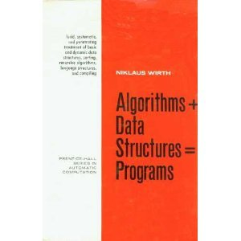

Estructura
Recuerdo que cuando estudiaba di con un libro de Niklaus Wirth cuyo título era: Algorithms + Data Structures = Programs.
Que simple es ver el mundo de la informática desde la perspectiva de ese título, pero hemos evolucionado mucho en estos años. Estamos en una etapa del desarrollo de la informática centrada en el servicio, la rueda ha girado y hemos vuelto al punto donde todo comenzó, pero esta vez la rueda se encuentra en un nivel más alto. La computación partió como un servicio, controlado por unos pocos para unos pocos, ahora la computación es servicio para muchos, autoadministrado, cualquiera puede desarrollar un servicio, o al menos existe esa potencialidad, para que cualquiera usando la nube pueda desarrollar sus propias innovaciones.

La pregunta es ¿cómo estructuramos una aplicación moderna en la realidad del cloud computing y del software as a service?, ¿cómo consideramos aspectos como la seguridad, la tolerancia a fallas, el escalamiento, la consistencia, la continuidad operativa, y un largo etcétera?
Vemos a muchos emprendedores que han desarrollado habilidades de programación, que construyen una aplicación innovadora que después se enfrentan a situaciones que no habían considerado. Servidores colapsando, código difícil de mantener que obliga a los nuevos equipos de desarrollo que se incorporan a reescribirlos, perdiendo un valioso tiempo, y por lo tanto competitividad.
Ante esto aparecen fórmulas mágicas, asociadas principalmente con cambios metodológicos, pero poco en pensar y aplicar la experiencia desarrollada por miles de horas de ingeniería aplicada a resolver estos problemas en el pasado. No importa lo innovadora que sea tu aplicación, hay un trabajo de ingeniería básica que no puede ser evitado.
Tal como nos dijo Vitruvio hace siglos, el orden arquitectónico, la disposición es esencial para desarrollar una arquitectura robusta y útil.
Chris Hoff propone una conceptualización para la estructura de aplicaciones en la nube, que resume en un modelo de capas los elementos y componentes necesarias para operar un servicio en la nueva realidad que propone el cloud computing.
El modelo de Hoff es el siguiente:

En este modelo nos queda clara las cuatro capas en que debemos dividir nuestro trabajo cuando trabajamos en la nube.
Tenemos en la parte inferior la infraestructura, que tiene que ver con lo más básico para operar, el hardware y las aplicaciones básicas: cpu, memoria, storage, sistemas operativos, capacidad de cómputo y almacenamiento.
Otro nivel basal está dado por la metaestructura, que es la capa que define los aspectos de configuración, acceso, y perfilamiento de la infraestructura, en esta capa tenemos elementos de redes, como DNS, definiciones de enrutamiento, controles de acceso, segregación de redes, seguridad, la capa de PKI, SSL, etc. Sin ser infraestructura, define como opera esta, es en cierto modo la que define las restricciones (constraints) a la infraestructura.
En el centro está la Apliestructura, que es la capa donde residen las aplicaciones y servicios, donde se ejecuta el código.
Y en la parte superior tenemos el contexto, los datos, la información que es lo relevante para el usuario.
Es importante entender que la infraestructura a veces se escapa de nuestra aplicación o servicio. Piensen si ustedes exponen un servicio como un recurso REST, es probable que otros ocupen ese recurso REST para realizar un Mashup, es decir, una nueva aplicación de nuestra data en otro contexto, es por esto que si bien en primera instancia pareciera que datos y aplicaciones son inseparables, en la realidad del cloud computing es es mejor verlas como cosas separadas.
Este modelo es la estructura, es el que define la forma de toda aplicación en la nube, y es interesante porque nos permite enfocar nuestro trabajo, incluso dividir y organizar a nuestro equipo de trabajo, donde cada colaborador desarrolla sus habilidades (skills) de acuerdo a la capa en la cual opera. Algo que veremos en el próximo post.